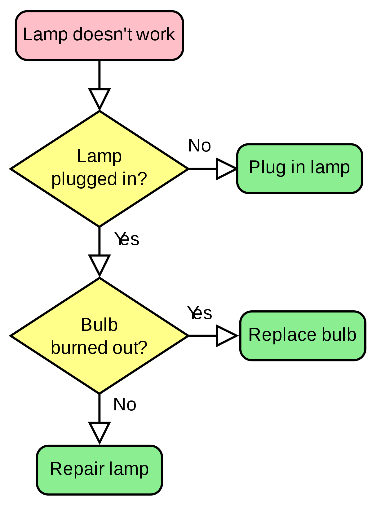

Welcome to the home page of the project: programming languages
Below are the links by which you can navigate througout the website:
1- Programming languages concept and the history of programming
2- Classifications of programming languages
3- Programming vs design
4- How to master the programming skill?
5- Is one language enough?
6- For more about the field
What is a programming language?
A programming language is a formal language comprising a set of strings that produce various kinds of machine code output. Programming languages are one kind of computer language, and are used in computer programming to implement algorithms.
Note: Algorithms are definite methods to solve problems, they may be written as flowcharts, UML or pseudo code.

History of programmimg languages:
- In 1949 the first computer language for electronic devices appeared and it required the programmer to change its statements into 0’s and 1’s. In 1951, Grace Hopper wrote the first compiler. A compiler is a program that turns the language’s statements into 0’s and 1’s for the computer to understand. This lead to faster programming.
- In 1957, the first major language appeared in the form of FORTRAN. It was designed for scientific computing. The components were very simple, and provided the programmer with low-level access to the computers.
- The Algol language was created for scientific use in 1958. It was the root languages as Pascal, C, C++, and Java. It was also the first language with a formal grammar.
- Pascal was begun in 1968. there was a concentration on developing good tools for teaching such as a debugger and editing system.
- C was developed in 1972. The transition in usage from the first major languages to the major languages of today occurred with the transition between Pascal and C. Its direct ancestors are B and BCPL, but its similarities to Pascal are quite obvious. All of the features of Pascal are available in C. C was built to be fast and powerful.
- C++ was designed to be OOPed maintaining the speed of C and be able to run on many different types of computers. C++ is most often used in simulations, such as games. It is the language of choice in today’s AP Computer Science courses.
- In the early 1990’s, interactive TV was the technology of the future. A language has developed eventually to control that and became Java. In 1994, the Java project team changed their focus to the web after interactive TV failed. The next year, Netscape licensed Java for use in their internet browser.
- Microsoft has extended BASIC language to Visual Basic. The heart of VB is the form, or blank window on which you drag and drop components such as menus, pictures, and slider bars. These items are known as “widgets.” Widgets have properties and events and are central to building any user interface.
- Most of today languages have developed from the previous ones with better speed, effeciency, syntax or design.